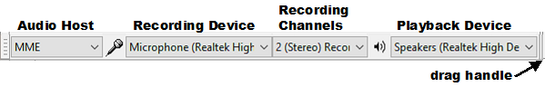
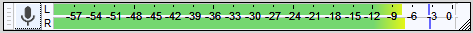

How to set up Audacity
Setting Up Audacity
The Device toolbar is displayed by default in a new installation of Audacity. If the Device toolbar is not visible, click on .
- 
| You may want to expand the width of Device Toolbar by dragging right on the drag handle. |
- Click on the Recording Channels dropdown menu and choose whether to record in stereo or mono
- Set the Playback Device and Recording Device dropdown menus to the built-in computer sound device, or to the specific sound device your cable is plugged into.
- Windows: Choose the line-in option for your connected sound device (for example, "Line-In: Realtek HD Device"). Do NOT select "Microsoft Sound Mapper" or "Primary Sound Capture Driver".
- Linux: Select the connected sound device.
- Mac: Select the "Built-in Audio: Line In" input device, or "USB Audio CODEC" if you are using an external USB audio adapter.
- If you cannot choose your input source as described above, or if the line-in input will not record, you can use the operating system mixer device to choose the required input. For instructions, see the further help for Windows, Mac or Linux on our Wiki.
Monitoring
Decide if you want to "monitor" your recording, that is hear it played back as you make it.
Software playthrough
Using software playthrough you can route the input to the output through the computer enabling you to hear what you are recording. All such methods have latency and cause extra load on the computer.
- In Audacity for all platforms: Choose Software Playthrough in Recording Preferences or under the menu.
- Windows: On some machines you can instead select your input in Windows "Sound", choose "Properties" then on the "Listen" tab, choose "Listen to this device". This usually has less latency than Audacity's Software Playthrough.
- Linux: Most modern Linux systems use ALSA and Pulse Audio with no software playthrough module installed. ALSA has the optional alsaloop playthrough module in alsa-utils and PulseAudio has an optional module-loopback, but these modules may have noticeable latency and audio breakup. Linux distributions specifically for music or media applications are likely to have JACK pre-installed, in which case low latency software playthrough can be configured in QjackCtl. </ul>
Hardware playthrough
If hardware playthrough is required, usually only needed for overdubbing, it is best to use an external USB or Firewire audio device that has a headphones jack for no-latency monitoring (such as the Behringer UCA 202 USB or Zoom H2 USB).
Set the volume level of your recording input
Click on the downward pointing arrow in the Recording Meter:and click "Start Monitoring".
- 
While playing a loud part of your tape or record, adjust the Recording Slider on the Mixer Toolbar so the Recording Meters are almost reaching the right-hand end of the scale. Don't let the meter bars actually reach the right edge, or the red hold lights to right of the meter will come on, indicating you'll have distortion in the recording. If the Recording Meters are not visible, click and check Meter Toolbar. Try to aim for a maximum peak of around –6.0 dB (or 0.5 if you have your meters set to linear rather than dB). Enlarging the Recording Meter Toolbar by clicking and dragging helps with this task, see this page in the manual for details,
| If the Mixer Toolbar Recording Slider does not control the input level correctly, or is grayed out on maximum, use the input slider in the operating system mixer device to regulate the input level. For instructions, see the further help for Windows, Mac or Linux on our Wiki. |
Links
> Forward to: Basic Recording, Editing and Exporting